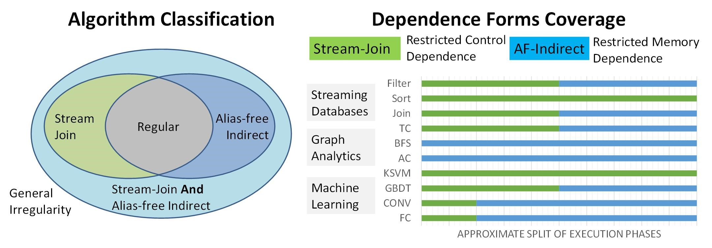

Projects
Accelerating Task-Parallel Workloads by Recovering Program Structure
Vidushi Dadu Tony NowatzkiReconfigurable accelerators, like CGRAs and dataflow architectures, have come to prominence for addressing data-processing problems. However, they are largely limited to workloads with regular parallelism, precluding their applicability to prevalent task-parallel workloads. Reconfigurable architectures and task parallelism seem to be at odds, as the former requires repetitive and simple program structure, and the latter breaks program structure to create small, individually scheduled program units. Our insight is that if tasks and their potential for communication structure are first-class primitives in the hardware, it is possible to recover program structure with extremely low overhead. We propose a task execution model for accelerators called TaskStream, which annotates task dependences with information sufficient to recover inter-task structure. TaskStream enables work-aware load balancing, recovery of pipelined inter-task dependences, and recovery of inter-task read sharing through multicasting. We apply TaskStream to a reconfigurable dataflow architecture, creating a seamless hierarchical dataflow model for task-parallel workloads. We compare our accelerator, Delta, with an equivalent static-parallel design. Overall, we find that our execution model can improve performance by 2.2x with only 3.6% area overhead, while alleviating the programming burden of managing task distribution.
Exposing the Value of Flexibility in Graph Processing Accelerators
Vidushi Dadu, Sihao Liu, Tony Nowatzki Because of the importance of graph workloads and the lim-
itations of CPUs/GPUs, many graph processing accelerators
have been proposed. The basic approach of prior accelerators
is to focus on a single graph algorithm variant (eg. bulk-
synchronous + slicing). While helpful for specialization, this
leaves performance potential from flexibility on the table
and also complicates understanding the relationship between
graph types, workloads, algorithms, and specialization.
In this work, we explore the value of flexibility in graph
processing accelerators. First, we identify a taxonomy of key
algorithm variants. Then we develop a template architecture
(PolyGraph) that is flexible across these variants while being
able to modularly integrate specialization features for each.
Overall we find that flexibility in graph acceleration is
critical. If only one variant can be supported, asynchronous-
updates/priority-vertex-scheduling/graph-slicing is the best
design, achieving 1.93x speedup over the best-performing accelerator, GraphPulse. However, static flexibility per-workload
can further improve performance by 2.71x. With dynamic
flexibility per-phase, performance further improves by up to
50%.
Using Memory Traces To Drive Spatial Architecture Studies
Vidushi Dadu, Kermin Elliott FlemingSpatial architectures have found applications in many specialization domains (eg. FPGA, CGRA, ASIC) but their evaluation has advanced haphazardly. The reason is that the flexibility in these architectures opens the design room for possible architecture techniques, making it hard to maintain a scientific baseline which is consistent with most hardware proposals. To drive the evaluation of spatial architecture studies, we have developed a broadly applicable memory trace format along with a trace generation algorithm. Using the traces, we performed workload characterization for important workloads in signal processing, linear algebra, graph processing, and bioinformatics.
Towards General Purpose Acceleration by Exploiting Data-Dependence Forms
Vidushi Dadu, Jian Weng, Sihao Liu, Tony NowatzkiProgrammable hardware accelerators (eg. vector processors, GPUs) have been extremely successful at targeting algorithms with regular control and memory patterns to achieve order-of-magnitude performance and energy efficiency. However, they perform far under the peak on important irregular algorithms, like those from graph processing, database querying, genomics, advanced machine learning, and others. We find that the reason is that they try to handle arbitrary control and memory dependence while data-processing algorithms exhibit only a handful of characteristics. By capturing the problematic behavior at a domain-agnostic level, we propose an accelerator that is sufficiently general, matches domain-specific accelerator performance, and significantly outperforms traditional CPUs and GPUs.
Simple Scheduling and Partitioning Techniques for Subarray-Aware Memories [paper]
Vidushi Dadu, Saugata Ghose, Kevin Chang, Onur MutluPrior works exploit implicit parallelism present in DRAMs (in the form of ranks, banks, and subarrays) to effectively distribute shared main memory to applications in a multi-core system. Although such techniques are expected to improve memory throughput, data distribution with lower granularity often complicates the scheduling memory requests problem. We suggest a hybrid application-aware scheduling and memory mapping technique to mitigate inter-application interference in subarray-aware memories. The application's characteristics are captured during a profiling phase using a novel metric called subarray sensitivity.
Image source: Yoongu Kim et. al., A Case for Exploiting Subarray-Level Parallelism (SALP) in DRAM, ISCA 2012.